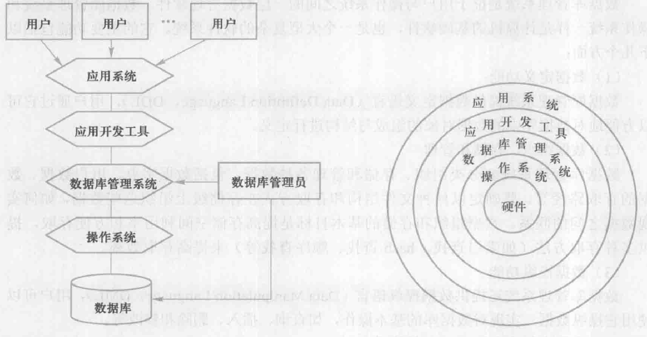
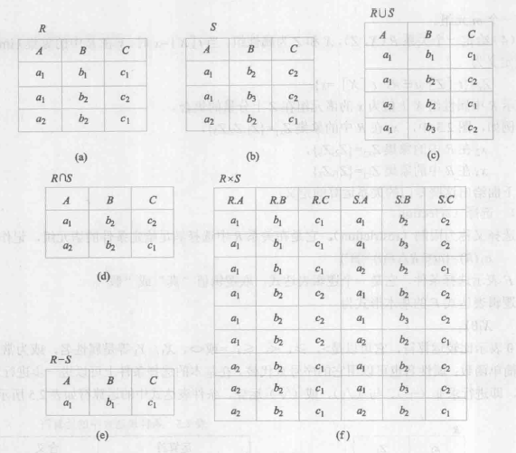
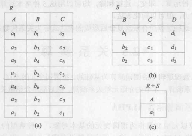

1. Database Bascis¶
1.1. Introduction¶
1.1.1. 数据库系统概述¶
1.1.1.1. 数据库的4个基本概念¶
- 数据 Data
数据是描述事物的数字化符号记录, 是数据库存储的基本对象
数据的含义由其语义决定 (同样的数字在不同语义下可以表示不同的含义)
- 数据库 Database
是 长期储存 在计算机内, 有组织, 可共享 的大量数据的集合
- 数据库管理系统 DBMS
Database Management System
DBMS是位于用户与操作系统之间的一层数据管理 软件, 用于科学地组织和存储数据, 高效地获取和维护数据
- 主要功能
提供数据定义语言 (Data Definition Language, DDL)
数据组织, 存储和管理
提供数据操纵语言 (Data Manipulation Language, DML)
查询、插入、删除和修改
数据库的事务管理和运行管理
保证数据的安全性, 完整性, 多用户对数据的并发使用
发生故障后的系统恢复
数据库的建立, 运行和维护
等等…
- 数据库系统 DBS
Database System
由数据库, 数据库管理系统 (及其应用开发工具), 应用程序, 数据库管理员 (Administrator, DBA) 构成

1.1.1.2. 数据管理的三个阶段¶
人工管理阶段 |
文件系统阶段 |
数据库系统阶段 |
||
|---|---|---|---|---|
背景 |
应用背景 |
科学计算 |
科学计算, 数据管理 |
大规模数据管理 |
硬件背景 |
无直接存取存储设备 |
磁盘等 |
大容量磁盘, 磁盘阵列 |
|
软件背景 |
没有操作系统 |
有文件系统 |
有数据库管理系统 |
|
处理方式 |
批处理 |
联机实时处理, 批处理 |
联机实时处理, 分布处理, 批处理 |
|
特点 |
数据的管理者 |
用户 (程序员) |
文件系统 |
数据库管理系统 |
数据面向的对象 |
某一应用程序 (一一对应) |
某一应用 |
现实世界 |
|
数据的共享程度 |
无共享, 冗余度极大 |
共享性差, 冗余度大 |
共享性好, 冗余度小 |
|
数据的独立性 |
不独立, 完全依赖与程序 |
独立性差 |
具有高度的物理独立性 (应用程序与数据的物理存储相互独立) 和一定的逻辑独立性 (应用程序与数据的逻辑结构相互独立) |
|
数据的结构化 |
无结构 |
记录内有结构, 整体无结构 |
整体结构化, 用数据模型描述 |
|
数据控制能力 |
应用程序自己控制 |
应用程序自己控制 |
由数据库管理系统提供数据安全性 (security), 完整性 (integrity), 并发 (concurrency) 控制和恢复 (recovery) 能力 |
1.1.2. 数据模型 Data Model¶
1.1.2.1. 目的不同的两类模型¶
现实 → 人的抽象 → 机器的抽象
- 概念模型 Conceptual model
也称信息模型, 以用户的视点来对数据和信息建模, 主要用于数据库设计
- 一些基本概念
实体 entity
属性 attribute
码 key
实体型 entity type
实体集 entity set
联系 relationship
- 实体-联系方法 Entity-Relationship approach
使用 E-R 图来描述模型
- 逻辑模型和物理模型
逻辑模型是以计算机的视点对数据建模, 主要用于数据库管理系统的实现 物理模型是对数据最底层的抽象, 描述了数据在系统内部的表示方式和存取方法, 面向计算机系统
1.1.2.2. 数据模型的组成要素¶
- 数据结构
描述了数据库的组成对象及对象间的联系, 描述了系统的静态特性
数据结构是数据模型最重要的方面, 因此在数据库系统中, 通常按照数据结构的类型来命名数据模型
- 数据操作
对数据库中各种对象的实例允许执行的操作的集合 (包括操作及有关操作的规则)
主要有查询和更新 (插入, 删除, 修改)
描述了系统的动态特性
- 数据的完整性约束条件
数据模型中的数据及其联系所具有的制约和依存规则
用于保证数据的正确, 有效和相容
1.1.2.3. 格式化模型¶
用记录表示实体, 实体的属性对应记录的数据项
数据结构的单位是 基本层次联系, 即两个记录及它们之间的一对多的联系
- 层次模型 Hierarchical Model
用树 tree 来表示各类实体及实体间的联系 (也只能表示树形结构)
层次模型中的基本层次联系为:
有且只有一个 node 没有 parent node, 即根节点 root node
根以外的其他 node 有且只有一个 parent node
层次模型中每个节点都表示一个记录类型, 记录类型之间的联系用节点之间的有向线段表示 (这种联系是 parent-children 的一对多的联系, 而联系是唯一的)
每个记录类型可以包括多个字段, 记录类型描述实体, 字段描述实体的属性
查找任何记录都必须按其层次路径查询 (即找到 node 的所有 parents)
- 网状模型
图 graph
网状模型中的基本层次联系为:
可以有多个 nodes 没有 parent node
每个 node 可以有多个 parent nodes
网状模型中每个节点都表示一个记录类型, 记录类型之间的联系用节点之间的有向线段表示 (这种联系是 parent-children 的一对多的联系, 两个 nodes 间可以有多个联系)
每个记录类型可以包括多个字段, 记录类型描述实体, 字段描述实体的属性
{kind=link}
{kind=link}
{kind=link}
1.1.3. 数据库系统的结构¶
1.1.3.1. 三级模式结构¶
{kind=link}
- 模式 Schema
数据模型是对实体及其关系的整体抽象定义; type-value
而 schema 则是对数据库中所有实体及其所有关系的抽象的具体的代码实现; schema-instance (一个数据库只有一个模式)
模式也称逻辑模式, 是数据库中全体数据的逻辑结构和特征的描述, 是所有用户的公共数据视图
三级模式结构的中间层, 既不涉及数据的物理存储, 也不涉及数据的具体应用
模式是数据库的中心与关键
- 外模式 External Schema
也称子模式 (subschema) 或用户模式, 面向数据库的终端使用者和具体应用
通常是 schema 的子集, 不同用户有不同权限, 可以保证数据库安全
- 内模式 Internal Schema
也称存储模式 (storage schema), 一个数据库只有一个内模式
定义了数据的物理结构和存储方式
- 二级映像功能与数据独立性
- 外模式/模式映像
反映了模式描述的数据全局逻辑结构的局部
模式改变时, 只需改变映像就可以使外模式保持不变, 即可不用修改应用程序, 实现了数据的逻辑独立性
- 模式/内模式映像
反映了模式定义的数据全局逻辑结构与存储结构之间的对应关系
存储结构改变时, 只需改变映像就可以保持模式不变, 实现了数据的物理独立性
1.1.4. 数据库系统的组成¶
系统运行和数据存储所需要的硬件平台
操作系统, 数据库管理系统, 开发工具
用户, 应用程序员, 数据库管理员, 系统分析员
1.2. 关系数据库¶
关系模型建立在集合代数的基础上
1.2.1. 关系模型的数据结构¶
关系模型的数据结构只包含单一的数据结构 – 关系
1.2.1.1. 基本概念¶
- 域 Domain
一组具有相同数据类型的值的集合
- 笛卡儿积 Cartesian Product
给定一组域 \(D_1, D_2, ..., D_n\), 它们的笛卡儿积为
\(D_1 \times D_2 \times ... \times D_n = \{ (d_1, d_2, ..., d_n) | d_i \in D_i, i=1, 2, ..., n \}\)
域可以相同
每个元素 \((d_1, d_2, ..., d_n)\) 叫做一个 \(n\) 元组 (n-tuple), 通常用 \(t\) 表示 (也叫记录 record)
元素中的每个值叫做一个 分量 (component)
互不重复的元组数为这个域的 基数 (cardinal number)
例
\(D_1 = \{ D_{11}, D_{12} \}\)
\(D_2 = \{ D_{21}, D_{22} \}\)
\(D_3 = \{ D_{31}, D_{32}, D_{33} \}\)
则 \(D_1, D_2, D_3\) 的笛卡儿积为
\(D_1 \times D_2 \times D_3 = \{ \\ \quad (D_{11}, D_{21}, D_{31}), (D_{11}, D_{21}, D_{32}), (D_{11}, D_{21}, D_{33}) \\ \quad (D_{11}, D_{22}, D_{31}), (D_{11}, D_{22}, D_{32}), (D_{11}, D_{22}, D_{33}) \\ \quad (D_{12}, D_{21}, D_{31}), (D_{12}, D_{21}, D_{32}), (D_{12}, D_{21}, D_{33}) \\ \quad (D_{12}, D_{22}, D_{31}), (D_{12}, D_{22}, D_{32}), (D_{12}, D_{22}, D_{33}) \}\)
其基数为 \(2 \times 2 \times 3 = 12\)
笛卡儿积也可以表示成一个二维表
\(D_1\)
\(D_2\)
\(D_3\)
\(D_{11}\)
\(D_{21}\)
\(D_{31}\)
\(D_{11}\)
\(D_{21}\)
\(D_{32}\)
\(D_{11}\)
\(D_{21}\)
\(D_{33}\)
\(D_{11}\)
\(D_{22}\)
\(D_{31}\)
\(D_{11}\)
\(D_{22}\)
\(D_{32}\)
\(D_{11}\)
\(D_{22}\)
\(D_{33}\)
\(D_{12}\)
\(D_{21}\)
\(D_{31}\)
\(D_{12}\)
\(D_{21}\)
\(D_{32}\)
\(D_{12}\)
\(D_{21}\)
\(D_{33}\)
\(D_{12}\)
\(D_{22}\)
\(D_{31}\)
\(D_{12}\)
\(D_{22}\)
\(D_{32}\)
\(D_{12}\)
\(D_{22}\)
\(D_{33}\)
- 关系 Relation
上述笛卡儿积的子集叫做域 \(D_1, D_2, ..., D_n\) 上的关系, 表示为
\(R(D_1, D_2, ..., D_n)\)
其中 \(R\) 表示关系名, \(n\) 是关系的 目 或 度 (degree)
关系也可以表示成一个二维表, 每行对应一个元组, 每列对应一个域 (域可以相同, 所以为每列起一个名字用于区分, 称为属性 attribute)
- 候选码 candidate key
关系的属性中可以唯一标识一个元组的一个属性组 (\(\geqslant 1\) )
这些属性叫做 主属性 prime attribute (其余属性叫做 非主/码属性)
- 主码 primary key
从多个候选码中选取一个作为主码
- 全码 all-key
候选码包括全部属性
- 关系的类型和性质
三种类型:
- 基本关系 (基本表)
实际存在的表, 实际存储数据的逻辑表示
- 查询表
查询结果对应的表
- 视图表
由基本表或其他视图表导出的表, 并不对应实际存储的数据
六条性质:
列同质 homogeneous
每一列中的分量皆为同一类型的数据, 都来自同一域
不同的列可以出自同一个域, 此时使用属性名来区分
候选码的值不能有重复
列的顺序不重要
行的顺序不重要
分量必须不可再分
1.2.1.2. 关系模式¶
关系模式即数据库中的型, 是对关系 (即数据) 的描述, 定义了属性, 属性的域, 以及属性与域之间的映像关系
可以表示为 \(R(U, D, DOM, F)\), 其中
\(R\) 为关系名
\(U\) 为属性名的集合
\(D\) 为属性的域
\(DOM\) 为 属性向域的映像集合
\(F\) 为属性间数据的依赖关系的集合
1.2.2. 关系操作¶
1.2.2.1. 基本操作¶
集合操作 方式是关系操作的特点, 也称为一次一集合 (set-at-a-time) 方式
非关系数据模型的数据操作方式称为一次一记录 (record-at-a-time) 方式
查询 query
选择 select
投影 project
并 union
差 except
笛卡儿积
连接 join
除 divide
交 intersection
…
插入 insert
删除 delete
修改 update
1.2.2.2. 关系数据语言的分类¶
关系代数语言 relational algebra
用对关系的运算来表达查询需求
关系演算语言 relational calculus
元组关系演算语言
域关系演算语言
结构化查询语言 SQL (Structured Query Language)
1.2.3. 关系的完整性¶
实体完整性 Entity Integrity
参照完整性 Referential Integrity
用户定义的完整性 User-defined Integrity
1.2.3.1. 实体完整性¶
若属性 \(A\) 是基本关系 \(R\) 的主属性, 则 \(A\) 不能取空值 null
1.2.3.2. 参照完整性¶
- 外码 Foreign Key
设 \(F\) 是基本关系 \(R\) 的一个或一组属性, 但不是 \(R\) 的码
\(K_S\) 是基本关系 \(S\) 的主码;
若 \(F\) 对应于 \(K_S\), 则称 \(F\) 是 \(R\) 的外码
称 \(R\) 为参照关系 (referencing relation), \(S\) 为被参照关系 (referenced relation; 或目标关系 target relation)
\(R\) 和 \(S\) 可以相同; \(K_S\) 和 \(F\) 必须在同一个域上
\(F\) 必须取空值或 \(K_S\) 中的值
1.2.4. 关系代数¶
关系代数是一种抽象的查询语言, 用对关系的运算来表达查询
- 运算对象
关系
- 运算符
集合运算
\(\cup\) 并
\(-\) 差
\(\cap\) 交
\(\times\) 笛卡儿积
关系运算
- \(\sigma\) 选择
又称为限制 (restriction), 记作 \(\sigma_F(R) = \{ t | t \in R \bigwedge F(t) = \text{TRUE} \}\)
其中 \(F\) 表示选择条件, 值为 TRUE 或 FALSE; 其基本形式为 \(X_1 \theta Y_1\)
\(\theta\) 为比较运算符, 值为 \(>, \geqslant, <, \leqslant, =, <>\)
\(X_1, Y_1\) 为属性名, 属性序号, 常量或简单函数
\(F\) 中也可以包括逻辑运算与或非等
- \(\Pi\) 投影
从关系 \(R\) 中选出若干属性组成新的关系, 记作 \(\Pi_A(R) = \{ t[A] | t \in R \}\)
- \(\bowtie\) 连接
也称 \(\theta\) 连接; 从两个关系的笛卡儿积中选取属性满足一定条件的元组, 记作 \({R \bowtie S}_{A \theta B} = \{ \widehat{t_r t_s} | t_r \in R \bigwedge t_s \in S \bigwedge r_r[A] \theta t_s[B] \}\)
记号
设关系模式为 \(R(A_1, A_2, ..., A_n)\), 一个关系为 \(R\); \(t \in R\) 表示 \(t\) 是 \(R\) 的一个元组; \(t[A_i]\) 表示元组中对应于属性 \(A_i\) 的一个分量
若 \(A = \{ A_{i1}, A_{i2}, ..., A_{ik} \}\), 其中 \(A_{i1}, A_{i2}, ..., A_{ik}\) 是 \(A_1, A_2, ..., A_n\) 中的一部分, 则 \(A\) 称为属性列或属性组; \(t[A] = (t[A_{i1}], t[A_{i2}], ..., t[A_{ik}])\) 表示元组 \(t\) 在属性列 \(A\) 上诸分量的集合; \(\bar{A}\) 则表示 \(\{A_1, A_2, ..., A_n\}\) 中去掉 \(\{ A_{i1}, A_{i2}, ..., A_{ik} \}\) 后剩余的属性组
\(R\) 为 \(n\) 目关系, \(S\) 为 \(m\) 目关系; \(t_r \in R\), \(t_s \in S\), 则 \(\widehat{t_r t_s}\) 称为元组的连接 (concatenation) 或串接
给定一个关系 \(R(X, Z)\), \(X\) 和 \(Z\) 为属性组; 当 \(t[X] = x\) 时, \(x\) 在 \(R\) 中的象集 (images set) 定义为 \(Z_x = {t[Z] | t \in R, t[X] = x}\), 表示 \(R\) 中属性组 \(X\) 上值为 \(x\) 的诸元组在 \(Z\) 上分量的集合
等值连接 equijion
从 \(R\) 与 \(S\) 的笛卡儿积中选取 \(A\), \(B\) 属性值相等的元组
\({R \bowtie S}_{A = B} = \{ \widehat{t_r t_s} | t_r \in R \bigwedge t_s \in S \bigwedge r_r[A] = t_s[B] \}\)
自然连接 natural join
一种特殊的等值连接; \(A\), \(B\) 必须为同名的属性组, 且结果中不存在重复的属性列
\(R \bowtie S= \{ \widehat{t_r t_s}[U-B] | t_r \in R \bigwedge t_s \in S \bigwedge r_r[B] = t_s[B] \}\)
\(U\) 为全体属性
悬浮元组 dangling tuple
在自然连接时所使用的属性上, \(R\) 中的一些元组没有与 \(S\) 所对应的值, 则这些元组被舍弃, 叫做悬浮元组
外连接 outer join ⟗
在结果中保留悬浮元组, 其他属性填 null
左外连接 left outer join (left join) ⟕
只保留左边关系中的悬浮元组
右外连接 right outer join (right join) ⟖
只保留右边关系中的悬浮元组
- \(\div\) 除
用两个关系的相同属性自然连接后, 保留只属于一个关系而不属于另一个关系的属性及其值

- 运算结果
关系
{kind=link}
{kind=link}